|
Курсы
Регистрация
Методика
Оглавление
Для учащихся

Статьи
Инструменты
Контакты
|
Урок 1.
С чего начать?
1.1.
Выбор средств разработки.
Здравствуйте, уважаемый
коллега и большое спасибо за интерес к нашему курсу "Создание
многопользовательской онлайновой браузерной игры". В первом ознакомительном
уроке мы кратко расскажем о том, что же Вам предстоит узнать, если Вы решите
приступить к изучению нашего увлекательного курса. Хотим сразу, без ложной
скромности заметить, что этот курс уникален и действительно является очень
увлекательным, ведь изучать веб-программирование на примере создания браузерной
игры интересно, легко и познавательно.
Перед нами стоит задача разработки
онлайновой игры и, первым делом, мы должны подобрать инструментарий для
выполнения нашей задачи. Так как игра будет работать в веб-браузере (сразу
оговоримся, что это будет Internet Explorer от
Microsoft, так как создание программ под разные типы
браузеров не входит в наши задачи по простой причине -
не хочется усложнять код), то соответственно нам понадобятся
начальные знания HTML и
JavaScript.
Если их нет - не беда, достаточно знания какого-нибудь языка программирования (C,
Pascal) и
большого желания научиться создавать онлайновые игры.
JavaScript будет решать наши игровые задачи на стороне
клиента (т.е. в браузере игрока) и теперь нам остается подобрать язык для
создания сценариев на стороне сервера.
Те кто не сталкивался с созданием задач
типа клиент-сервер, должен понять, что онлайновая игра в отличии от обычной
однопользовательской игры, которая целиком запускается на машине играющего,
состоит из двух частей - клиентской и серверной. Именно серверная часть игры
принимает самые важные игровые решения, такие как - расчет урона при боях
персонажей, улучшение его характеристик, использование игровых предметов и т.д.
Клиентская часть только информирует серверную часть о выполненных пользователем
действиях, а та уже выполняет эти действия, если они разрешены игровой логикой и
правилами.
Чтобы серверный программный код
принимал какие-либо решения на основании пришедших от клиентской части игры
событий, он должен иметь "под рукой" данные, к которым можно обратиться и уже на
их основании совершать то или иное действие (нанесение урона, надевание
комплекта одежды на персонаж и т.д.). Т.е. у нас на сервере должна существовать
база данных, которая содержит всю необходимую информацию для функционирования
игровой логики. Так, если игрок решил перейти из одной игровой локации в другую,
то серверный программный код обращается к базе данных и запрашивает базу данных
о текущей игровой локации игрока, проверяет возможность перехода в другую
локацию (например из торгового зала на центральную площадь города), определяет
время перехода и еще множество величин, необходимых для анализа этого действия и
если такой переход оказывается возможным (игрок не перегружен оружием и может
двигаться, он не травмирован и т.д.), то действие по переходу выполняется и
клиентской части возвращается веб-страница с новой локацией игрока.
На самом деле, столь сложное на вид действие выполняется парой-тройкой строк
программного кода и Вы в дальнейшем увидите на сколько это легко реализовать,
если правильно сконструировать базу данных.
Поскольку мы уже знаем, что нам
понадобится база данных, то совсем не лишним будет определиться с ее типом. На
сегодняшний момент существует довольно приличное количество баз данных - это и
MS SQL Server, и
Interbase, и Oracle с его
колоссальными возможностями и
Sybase и Postgres и еще большой ряд
других СУБД, но для веб-ориентированных приложений все таки
лучше остановиться на MySQL
- как на более простой и в то же время достаточно функциональной
базе. MySQL бесплатна и
очень легка в освоении, ее легко администрировать и она очень быстрая, что
просто необходимо для получения данных от сервера по запросу клиентской части
игры.
Для взаимодействия с базой данных и
реализации игровой логики нам понадобится скриптовый язык. Из наиболее
популярных средств, можно выделить ASP,
PHP, Perl или CGI-приложение
написанное, например на C++ или
Pascal (Delphi). Остановим свой
выбор на PHP. Это, так
называемый интерпретирующий язык и, безусловно несколько более медлителен, чем
компилированные программы на языке С++ или Pascal,
но все же обладает рядом
преимуществ таких как:
1. У интерпретатора упрощается обнаружение
ошибок во время выполнения программы. В случае сбоя интерпретатор сразу же
выведет сообщение, если что-то не так.
2. Можно не заботиться об освобождении выделенной памяти. Интерпретатор сам
определит, когда та или иная переменная в программе уже не используется, и
освободит память, выделенную для нее.
3. Существует возможность написать программу, которая, грубо говоря, будет
формировать и тут же исполнять другую программу, что очень часто практикуется
при шаблонной системе организации скриптов. В частности, мы можем формировать
идентификаторы во время исполнения программы, создавать массивы заранее
неопределенных функций и т. д.
4. Не нужно думать о типах переменных.
Таким образом, использование интерпретатора способно дать сценариям ту мощь,
которую пользователи Web от них и ожидают, а для разработчика - легкость
написания и отладки игровой логики программы.
Язык ASP требует установки
Microsoft Visual Studio, и это
усложнит процесс обучения, поэтому отбросим его. Остается
Perl и PHP. У каждого из
этих языков есть достоинства и недостатки, однако языки совершенствуются и
недостатков становится все меньше. Однако несмотря на то, что
Perl все таки работает несколько быстрее чем PHP,
он обладает одним существенным недостатком, который может отпугнуть начинающего
программиста: чересчур сложный синтаксис!
Многие особенности
PHP такие как: вставки кода в документ
HTML, перенаправление ошибок в браузер (а не в
лог-файл как было раньше), обработка форм, все это
теперь есть и в Perl и можно отметить, что
работает быстрее. Однако PHP был и остается очень
простым языком, понятным новичкам в веб программировании и поэтому для наших
курсов создания онлайновой игры мы остановимся именно на языке сценариев
PHP. Встроенная в PHP
поддержка баз данных, реализованная в виде вызова простых функций обеспечит нам
быструю реализацию взаимодействия с выбранной нами базой
MySQL и упростит учебный процесс.
Итак, мы определились: для разработки игры мы будем использовать
HTML и JavaScript
на стороне клиента (веб браузер игрока) и связку
Apache +
PHP + MySQL
на стороне сервера. На первый может показаться, что для
разработки потребуются достаточно времени на установку и
настройку всех этих средств. Однако не спешите отправляться в Интернет на их
поиски и скачивать их по отдельности! Читайте дальше - все решается гораздо
проще!
1.2.
Установка
пакета Denwer.
Думается у большинства сегодняшних
пользователей операционных систем от компании
Microsoft установлена ОС либо
WindowsXP либо Windows Vista,
где имеется поддержка встроенного веб-сервера
IIS (Internet Information Services)
и мы вполне могли бы использовать его. Однако,
предположим, что Вы создадите свою онлайновую игру и захотите разместить ее на
сервере с ОС Linux, где нет
IIS, тогда вам понадобится выбирать другой
веб-сервер. Исходя из этих рассуждений, остановимся на веб-сервере
Apache который одинаково успешно работает как на
платформах Windows так и Linux
(Unix) системах.
К счастью нам не понадобится ничего из
вышеперечисленных средств серверной части нашей с вами онлайновой игры (PHP,
MySQL, Apache) ставить отдельно и
настраивать вручную. За нас это сделает замечательный пакет, состоящий из этих и
других программ - Denwer, собранный
российскими разработчиками из компании
dklab и размещенный на сайте:
www.denwer.ru В
этот пакет входят: база данных
MySQL, язык PHP, веб-сервер
Apache, PHPMyAdmin - удобное средство управления базой
данных MySQL и много другое. Более того, все
компоненты настраиваются на этапе установки комплекса Denwer
и мы сможем приступить к разработке
нашей с Вами игры практически сразу после инсталляции.
Для начала перепишите базовый пакет Denwer с
сайта создателя этого пакета:
Скачать
Denwer с сайта dklab
или с нашего сайта (игра
разрабатывалась на этом пакете и мы рекомендуем скачать его):
Скачать
Denwer с сайта
BlitzSchool
Перед установкой пакета не лишним
будет проверить - настроен ли Ваш компьютер для работы с сетью. Для этого
выполните несложные действия:
Нажмите кнопку "Пуск" - "Выполнить" и введите следующую команду:
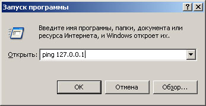
После нажатия Enter или
кнопки Ok вы должны увидеть
примерно следующую картину:
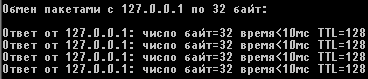
Если этого не произошло, то у Вас, по всей видимости не установлены сетевые
протоколы. В WindowsXP (или
Vista) такое вряд ли возможно, но если у Вас до сих пор
стоит Windows 98/ME,
то выполните следующее нехитрое действие: зайти в Панель
управления — Установка и удаление программ — Установка Windows и
добавить там Удаленный доступ к сети. При этом автоматически
установятся и все нужные протоколы.
Далее запускаете инсталлятор, для наших курсов была выбрана версия с названием:
Base_2006-10-04_a1.3.33_p4.4.3_m4.1.16_pma2.6.1
После старта вы увидите примерно такое окно:
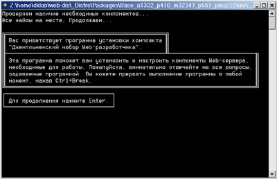
После нажатия
Enter вас попросят выбрать каталог для установки или
той же клавишей Enter подтвердить
установленный по умолчанию каталог:
C:\WebServers. Очень
желательно согласиться со значением по умолчанию, чтоб не возникло
рассогласований с далее излагаемым материалом и у Вас не было побочных действий
при работе с программами.
Далее вам предложат ввести имя виртуального диска, который
будет связан с только что указанной директорией. Рекомендуем вам согласиться со
значением по умолчанию (Z:).
Важно, что диска с этим именем еще не должно содержаться в системе —
чаще всего так и происходит с диском Z:.
После этого
начнется копирование файлов дистрибутива, а под конец вам будет задан вопрос,
как именно вы собираетесь запускать и останавливать комплекс. У вас есть две
альтернативы:
1. Создавать виртуальный диск при загрузке машины
(естественно, инсталлятор позаботится, чтобы это происходило автоматически), а
при остановке серверов его (диск) не отключать. На наш взгляд, это наиболее
удобный режим.
2. Создавать виртуальный диск только по явной
команде старта комплекса (при щелчке по ярлыку запуска на Рабочем столе). И,
соответственно, отключать диск от системы - при остановке серверов.
Рекомендуем выбрать режим 1.
На рабочем
столе появятся следующие ярлычки для запуска/остановки комплекса
Denwer:
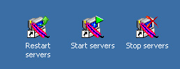
Собственно, вот и все. Вы сможете выполнить установку комплекса, имея всего 2
клавиши на клавиатуре: Enter
и Y (чтобы ввести
Yes). Теперь у Вас установлено и
настроено сразу несколько инструментальных средств:
PHP,
Apache и база
MySQL
из числа тех, что понадобятся нам для создания нашей онлайновой игры.
1.3.
Выработка концепции игры.
Как Вы догадались из описания к названию курса, мы с Вами будем
разрабатывать онлайновую игру на подобие Бойцовского клуба (www.combats.ru).
Бойцовский Клуб был одной из первых web-based РПГ в
русском сегменте Интернета, за что и получил широкую известность и популярность.
Из него вышли такие игры, как Территория, Арена, NeverLands
и многие другие.
В 2005-2006 годах БК был объявлен лучшим
развлекательным проектом Рунета. Проект открылся уже давно, поэтому система боя,
торговли и прочих взаимоотношений игроков прошли испытание временем и показали
свою эффективность.
Мы не ставим перед собой задание повторить целиком этот
проект. Наша цель - научиться создавать похожие проекты, понять принцип
функционирования онлайновых игр и реализовать в собственной игре их основные
концепции.
Итак, наша игра будет представлять собой ролевую онлайновую
игру. После регистрации в проекте, играющий получает в свое распоряжение
персонаж с какими-то начальными характеристиками. Допустим это будут такие
характеристики как сила, ловкость, интуиция и
выносливость, а также навыки использования оружия - мечей, копий,
булав и ножей. В последствии, по мере развития персонажа,
перехода его с уровня на уровень, будут добавляться дополнительные навыки и
способности.
Основной движущей единицей развития героя будет опыт. Опыт
приходит к персонажу в результате выигранных боев и по достижении каких-то
граничных величин опыта, у играющего появляется возможность перераспределить его
в характеристики и навыки владения оружием. Так происходит развитие героя.
Игровой мир будет слагаться из городов и входящих в них
игровых локаций. В игровых локациях будут размещаться объекты с которыми будет
взаимодействовать игрок.
Давайте опишем игровые объекты и примерный
интерфейс взаимодействия персонажа с этими объектами:
1.
Мастерская кузнеца (здесь производят и чинят оружие:
мечи, топоры, копья, ножи, булавы и продают их только по гос. цене) производство
может проходить раз в месяц или в случайные даты, посмотрим как получится (в
зависимости от дефицита).
Меню здания: сразу при входе в здание: (отображается список типов оружия,
затем по щелчку на определенный тип, открывается список со всеми предметами
данного типа:), Есть кнопка починить, при нажатии на которую открывается
наш рюкзак с ценами на ремонт данной вещи)
2.
Мастерская оружейника (здесь производят и чинят доспехи:
пластинчатую броню, кольчуги, кожаную броню, щиты, пояса, шлемы, сапоги,
перчатки)
Меню здания: сразу при входе в здание: (отображается список типов амуниции,
затем по щелчку на определенный тип, открывается список со всеми предметами
данного типа:), Есть кнопка починить, при нажатии на которую открывается
наш рюкзак с ценами на ремонт данной вещи)
Примечание! В нашем курсе мы объединим эти два типа здания в одно!.
3.
Комиссионный
Магазин (Здесь могут появляться вещи, которых нет в продаже по
гос. ценам, редкие вещи, вообще любые нетипизированные вещи по завышенным ценам.
Сюда можно сдать любые вещи на комиссию для покупки другими игроками ).
Меню здания: сразу при входе в здание: (отображается список всех категорий
вещей продаваемых другими игроками (наименование, свойства, количество,цены)), Есть
кнопка сдать на комиссию, при нажатии на которую открывается список вещей
по категориям, выставленных на продажу другими игроками. Там же есть кнопки:
сдать вещь и забрать вещь. Нажатие на кнопку сдать вещь
приводит к появлению нашего рюкзака из которого можно выбрать вещь для сдачи
торговцу. Щелчок на вещи и появляется окошко для ввода цены, с которой мы хотим
сдать предмет. Кнопка: Забрать вещь – открывается список всех вещей, числящихся
за игроком, и лежащих у торговца. В списке должна быть ссылка у каждой вещи –
сменить цену. Также возможна кнопка: обучиться навыку торговли: (при
владении навыком можно покупать дешевле вещи в гос. магах)
4. Вокзал, причал (транспортное средство. На нем можно переехать в другой
город за несколько часов, тогда как добираться пешком будет не легко – несколько
дней) В этих зданиях продаются билеты (отдельная таблица билетов, которые
заносятся в 12.00 ночи. (допустим вокзал в Силлурии позволяет делать несколько рейсов за
день по 2 часа в другие города).
Чтоб переехать(переплыть) в другой город, нужно купить билет на определенное
время, на нужное направление и к этому времени быть в здании конюшни (причала).
Дальше можно даже покинуть клуб – все равно прибудем на место.
Меню здания: список времен и направлений (например)
12.00 Карета 1 Отправление до Гринсфилда
билетов: 12 (цена 5 кредиток (золотых монет)) время в пути 2 ч.10 минут
14.30 Карета 2 Отправление до Авелорна билетов:
12 (цена 4 кредитки (золотых монет)) время в пути 3 часа 15 минут.и т.д.
5.
Домик учителя какого либо навыка (Обычный дом, где проживает системный
персонаж, обучающий нашего героя мастерству владения оружием, магией на
соответствующем уровне).
Уровни мастерства в Клубе:
обычный – все игроки при рождении появляются со знаниями обычный уровень
эксперт – 1.5х повреждение при атаке магией или оружием, 1.5х защита от магии
или оружия
мастер – 2х повреждение при атаке магией или оружием, 2х защита от магии или
оружия
магистр – 3х повреждение при атаке магией или оружием, 3х защита от магии или
оружия
Естественно, что для каждого
предмета свой учитель. Так, к примеру, учителя до уровня эксперта, мастера,
магистра в навыке владения кольчугой живут в разных городах, а могут и в одном
но в разных домах. Главное, что это ни одно и то же лицо!
Меню: повысить специализацию в [нужное подставить] до уровня [нужное подставить]
за столько то золотых монет.
Примечание! Мастером в навыке может стать только
эксперт в этом навыке, а магистром мастер. То есть налицо – поэтапное развитие
персонажа.
6.
Лавка магических предметов (здесь производят и
чинят ювелирные изделия: кольца, ожерелья(кулоны) и серьги)
Меню здания: Здесь можно приобрести различного рода магические
предметы. В основном это свитки какой-либо из четырех стихий (огонь, вода,
воздух, земля)
7.
Торговые ряды (Рынок) (Здесь происходят все сделки между
игроками – покупка/продажа вещей, передача вещей и денег друг другу и т.д.)
Только в этом зале позволяется постить в чат сообщения о продаже и покупке
вещей.
Передавать предметы и деньги можно, допустим только с 4 уровня персонажа, сдача
торговцу на комиссию – с третьего. Если игроки договариваются в чате (приватном
чате о сделке)…покупатель нажимает кнопку передача и после открытия окна
передачи, ждет предложения. Продавец открывает окно «передача», вводит Ник
покупателя и затем открывается свой рюкзак из которого он может выбрать предмет
для продажи. Возле каждого предмета должна быть размещена ссылка (линк)
обращения к серверу: продать, передать, подарить.
Нажав, к примеру, на линк продать и указав цену, Продавец заставляет
сервер обновить окно у Покупателя с предложением о покупке этого предмета. У
Покупателя в окне «передача» возникает окошко с названием, характеристиками и
ценой предмета, а также кнопки купить и отклонить покупку.
Передача и дарение не вызывает никаких возникающих окон у Покупателя, просто он
видит системное сообщение в чате, к примеру: 12.10.
Персонаж такой-то передал вам меч «Хаоса»
8.
Зал поединков (Арена)
(основной игровой объект нашего клуба)
:
Арена считается полноправным объектом, для нее существует свой чат. По-сути
чат один, но сообщения фильтруются в зависимости от игрового объекта, где в данный
момент находится игрок.
Здесь можно подавать заявки на бой, принимать чужие заявки, участвовать в
групповых боях, боях на деньги, случайных (хаотичных боях) и т.д. Победа в бою
приносит опыт. Поражение и ничья не дает опыта, а приводит к износу вещей
(в случайном порядке). Полученный опыт при достижении граничных значений
приводит к переходу персонажа с апа на ап, с уровня на уровень.
Примерная таблица опыта до 2 уровня может выглядеть так:
Таблица опыта
|
Уровень |
Ап |
база |
добавл статов |
добавл выносливость |
Владение |
Золотых монет |
опыт |
|
0 |
|
5 |
+3 |
|
+1 |
0 |
0 |
|
0 |
1 |
5 |
|
|
|
1 |
25 |
|
0 |
2 |
5 |
|
|
|
2 |
50 |
|
0 |
3 |
5 |
|
|
|
4 |
75 |
|
0 |
4 |
5 |
|
|
|
4 |
100 |
|
0 |
5 |
5 |
|
|
|
5 |
125 |
|
1 |
6 |
10 |
+3 |
+1 |
+1 |
10 |
150 |
|
1 |
7 |
10 |
|
|
|
1 |
210 |
|
1 |
8 |
10 |
|
|
|
4 |
270 |
|
1 |
9 |
10 |
|
|
|
6 |
340 |
|
1 |
10 |
10 |
|
|
|
8 |
400 |
|
1 |
11 |
10 |
|
|
|
10 |
460 |
|
1 |
12 |
10 |
|
|
|
10 |
530 |
|
2 |
13 |
10 |
+3 |
+1 |
+1 |
20 |
600 |
|
|
|
|
|
|
|
|
|
9.
Валютный магазин:
Этот магазин создан не для всех игроков, потому что здесь продаются
исключительно валютные вещи и артефакты. Обе эти категории вещей приобретаются
за игровую валюту - еврокредитки (по примеру Бойцовского Клуба). Еврокредиты
имеют официальный обменный курс: 1 еврокредит = 1 евро. Эти деньги вводятся в
игру через платежные сервисы игры и официальных дилеров онлайн игры.
10.
Банк:
Здесь для каждого игрока открыт специальный счет, на котором могут храниться как
обычные игровые деньги - кредиты, так и валютные средства - еврокредиты. В
режиме управления счетом игрок может проводить обмен между еврокредитами и
кредитами, переводить деньги со счета на счет, открывать другие счета и др.
Перечень
зданий может быть нами изменен по ходу разработки игры. Что-то может быть
удалено, что-то добавлено. Так всегда происходит во время реализации
задуманного. Какой-то пункт плана покажется нам на этапе воплощения ненужным и,
наоборот, мы могли нечто упустить и этот пункт добавится уже непосредственно при
создании игры.
Мы очень подробно рассмотрим создание каждого из типов зданий, напишем легкий
для понимания программный код, который не вызовет затруднения даже у новичков в
программировании.
1.4.
Вспомогательные
инструменты разработки.
Так как этот курс пишется для программистов, а не для
дизайнеров, то соответственно предполагает упор на создание игровой логики, а не
художественных изысков. Если Вы уже пробовали себя в веб программировании,
значит у Вас уже есть некоторый инструментарий для разработки веб-проектов.
Каждый может выбирать софт исходя из своих нужд и предпочтений.
Мы, на протяжении нашего курса будем пользоваться
такими инструментами как
PHPCoder
и EMS MySQL Manager.
PHPCoder - бесплатное
средство для разработки и
запуска программ на PHP. Скачать его можно по
адресу http://www.phpide.de/. Он дает самые необходимые
удобства для написания PHP кода, подсветку синтаксиса,
удобную справочную систему, выполнение в собственном окне
и многое другое. В этом редакторе Вы
можете набирать полный текст веб страницы с PHP
вставками, не используя других визуальных редакторов
HTML, таких как Microsoft FrontPage
или Adobe DreamWeaver. Хотя, опять же
повторимся, Вы можете использовать те инструменты, к которым привыкли или просто
считаете наиболее оптимальными с Вашей точки зрения.
EMS MySQL
Manager - Предназначен для
администрирования сервера MySQL и управления его объектами. Его графический
интерфейс позволяет Вам создавать и редактировать объекты базы данных MySQL
наиболее простым и удобным способом, визуально проектировать базы, выполнять SQL
скрипты, управлять пользователями и их правами, визуально строить SQL запросы,
извлекать и печатать метаданные, создавать HTML отчеты о структуре базы,
экспортировать и импортировать данные, просматривать и редактировать поля BLOB,
а также множество других услуг, которые сделают Вашу работу с сервером MySQL
настолько легкой, насколько это возможно.
Этот программный продукт Вы тоже можете
скачать с нашего сайта (скачать)
Конечно вы можете использовать стандартное
средство phpMyAdmin, которое уже есть в составе пакета
Denwer. После установки этого пакета, это средство управления базой
MySQL доступно по ссылке:
http://localhost/Tools/phpMyAdmin/
1.5.
Краткий
экскурс в уроки.
Здесь
Вы кратко ознакомитесь с наполнением наших уроков и сможете определиться, с
дальнейшими занятиями. Если у Вас возникнет желание лишь получить базовые знания
создания онлайн игры, то вам достаточно прослушать 2, 3, 4 и 5 уроки.
Если у Вас серьезные намерения изучить разработку
интерактивных игровых объектов (кузница, комиссионный магазин, вокзал,
магическая лавка, банк и др.), изучить логику проведения поединков, сделать
игровой чат, рассмотреть принципы торговли в клубе, то Вам следует задуматься
над прохождением полного курса. Прохождение полного курса позволит Вам
научиться делать браузерные онлайн игры любой сложности. Вооружившись этими
знаниями Вы сможете, в дальнейшем, создавать собственные игры и реализовывать их
в Интернет. Многие несложные игровые проекты вы будете способны реализовать
самостоятельно, более масштабные потребуют присутствия в команде нескольких
разработчиков, в основном - художников. Что касается игровой логики, Вы
это без проблем сможете делать сами.
Урок № 2
Этот урок позволит Вам научиться создавать регистрацию новых персонажей в Вашей
игровой вселенной.
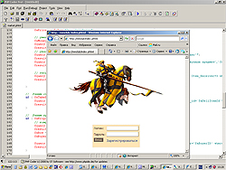
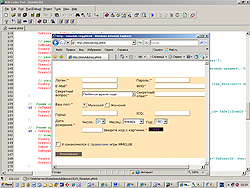
В процессе прохождения этого занятия, мы создадим таблицу
регистрационной информации, приготовим форму ввода данных пользователя при
регистрации в игре. Изучим, как осуществлять проверку ввода данных на стороне
браузера клиента и рассмотрим последующее сохранение этих данных на сервере в
нашу таблицу в базе MySQL. В
заключение урока - разработаем простое средство для предотвращения
автоматических регистраций.
Урок № 3
Этот урок будет посвящен разработке основного игрового окна нашей с Вами онлайн
игры.
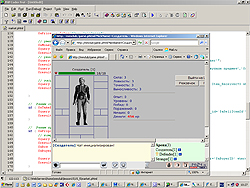
Мы разработаем динамический главный фрейм, набросаем страницы чата,
игровой локации, страницу управления игрой и основную страницу игры для
отображения картинки и характеристик нашего персонажа.
Урок № 4
В текущем уроке нами будет рассмотрены вопросы игровых характеристик нашего
персонажа.
Кроме того мы разработаем зоны защиты и поражения игрока, для чего
даже напишем на JavaScript
небольшую тестовую
тренировочную игру для проведения боя между двумя персонажами.
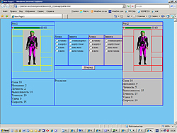
Далее мы создадим
справочник свойств игровых предметов и таблицу для хранения всех предметов в
клубе, рассмотрим их влияние на характеристики нашего героя.
Урок № 5
Этот урок позволит Вам научиться создавать инвентарь для нашего подопечного для
содержания различных игровых объектов.
|
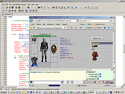 |
 |
|
 |
|
Мы научимся программно описывать слоты
персонажа, перемещать предметы (оружие, амуницию) между инвентарем и слотами для
использования в поединках. Научимся ограничивать возможность использования
предметов по уровню и статам (характеристикам) героя.
Урок № 6
В этом уроке мы, наконец-то вырвемся за пределы базовой игровой комнаты и
создадим Центральную Площадь, где будут размещаться создаваемые нами далее
игровые объекты.
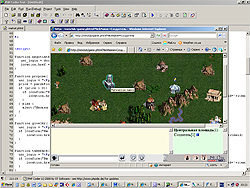
Основной упор в данном уроке будет сделан на проектирование и
создание магазина торговли оружием и доспехами (кузницы). Более того, мы
научимся чинить изношенные предметы, для чего в здании кузницы будет
предусмотрен отдел ремонтной мастерской.
Урок № 7
Текущий урок позволит нам вплотную подойти к проведению боя. Мы создадим таблицу
одиночных заявок, рассмотрим различия в проведении кулачных боев и боев с
оружием.
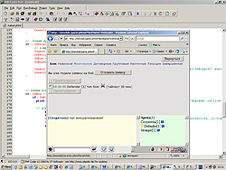
Далее мы научимся подавать заявки на бой и принимать чужие заявки, а
также отзывать собственные заявки и предложения для проведения поединка.
Урок № 8
Это основной урок нашего курса! Здесь рассматриваются аспекты создания
таблиц поединков, изучается игровая логика проведения поединка, сообщений о
проведении боя.
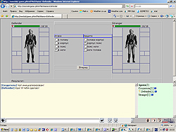
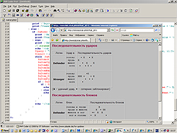
В завершении урока мы создадим статистику нанесения и
блокирования ударов во время игрового поединка.
Урок № 9
Так как создаваемый нами клуб называется Клубом Меча и Магии, мы не можем пройти
мимо проведения магических поединков.
|
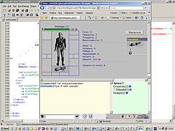 |
Свиток огня |
Свиток воздуха |
В этом уроке мы создадим магические
свитки, которые потом применим в поединке с использованием магии, сделаем слот у
персонажа, предназначенный для содержания свитка на время боя. Кроме того нами
будет создана Магическая Лавка для продажи свитков и средств для защиты от
магических атак.
Урок № 10
Этот урок позволит Вам научиться создавать комиссионный магазин, группы
комиссионных товаров.
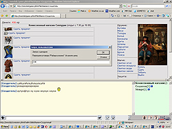
Мы научим нашего героя приобретать товары в комиссионке,
сдавать собственные товары на комиссию, рассмотрим вопросы возврата и переоценки
игровых предметов, а также удержание комиссионного процента за операции.
Урок № 11
В этом уроке мы рассмотрим принципы общения в создаваемой нами онлайн игре.
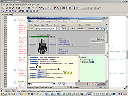
Мы
создадим таблицы чата и игровых объектов, рассмотрим различия в общем чате и
приватных сообщениях для игроков, находящихся в разных комнатах. В завершение
добавим в наш чат использование смайликов.
Урок № 12
В процессе прохождения текущего урока мы с Вами создадим таблицу городов и карту
перемещений, построим вокзал на Центральной Площади, создадим расписание карет и
научимся покупать билеты на них до нужного пункта назначения.
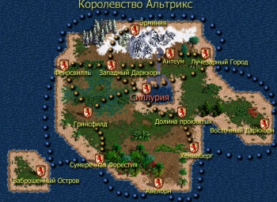
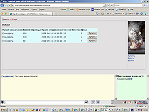
В конце урока мы
решим вопросы сдачи ненужных или просроченных билетов
и собственно отправления в
нужный срок из здания вокзала на выбранном транспортном средстве.
Урок № 13
Один из самых интересных в важных вопросов игры - вопрос торговли будет решен в
текущем уроке.
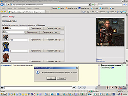
Мы построим здание Торговых Рядов, где игроки смогут проводить
торговые сделки. В ходе занятия, мы научимся передаче, продаже и приобретению
предметов непосредственно во время взаимодействия двух игроков.
Урок № 14
Этот урок позволит Вам подробно рассмотреть вопросы создания платных сервисов
игры. В течение урока мы введем в действие специальные валютные предметы и
артефакты, которые очень усиливают персонаж.
Для продажи таких предметов, мы
создадим валютный магазин и банк, в котором можно будет открывать счета и
осуществлять как обменные операции, так и денежные переводы между счетами.
Урок № 15
В завершающем уроке курса мы с Вами затронем вопросы обеспечения порядка в
клубе, введя специальных игроков -
 паладинов, которые будут являться
стражами Закона в нашей онлайновой игре. паладинов, которые будут являться
стражами Закона в нашей онлайновой игре.
|
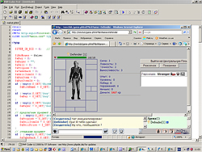 |
- наложение молчанки |
 - наложение хаоса
- наложение хаоса |
 -
блокировка персонажа -
блокировка персонажа |
В роли паладина мы научимся применять к
игрокам различные дисциплинарные наказания - молчанки, отправление в Хаос и
блокировку игроков. В конце урока - мы создадим небольшую стратегическую игру,
где Вы сможете управлять небольшим отрядом войск и выбирать тактику
проведения поединка.
Желаем Вам успехов и добро
пожаловать на наши курсы!
Что
будет далее:
В следующем уроке (№2) мы создадим нашу
базу mySQL и таблицу
для сохранения информации о регистрирующихся игроках, сделаем первую
страницу авторизации и регистрации новых игроков с проверкой вводимой
информации как на стороне браузера, так и на стороне сервера. В
заключение мы реализуем один из способов защиты игры от автоматических
регистраций.
|
|